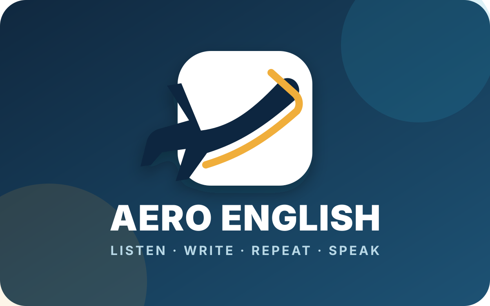

Aprendizado ativo e visual
- Níveis básico, intermediário e avançado
- 150 lições visuais por idioma
- Ciclo: ouvir, escrever, repetir e falar
- Reconhecimento de voz para prática oral
- Conteúdo para inglês, espanhol, francês e italiano
Experiência educacional desenvolvida para Android e web, com Kotlin, JavaScript e recursos de voz do navegador.